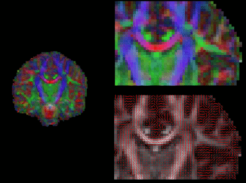

Displaying DWI images in fslview
Outputs of Bedpost or DtiFit can be conveniently displayed
in fslview. If you open an image of diffusion vectors (e.g., dtifit_V1
output of DtiFit or merged_dyadic_vectors output of Bedpost) then it is
possible to display these vectors using RGB coding (where the colours
red,green and blue represent diffusion in the x,y,z axes respectively) or
using lines where a line at each voxel represent the principle
diffusion direction at that voxel. For more details see the relevant fslview
tutorial.